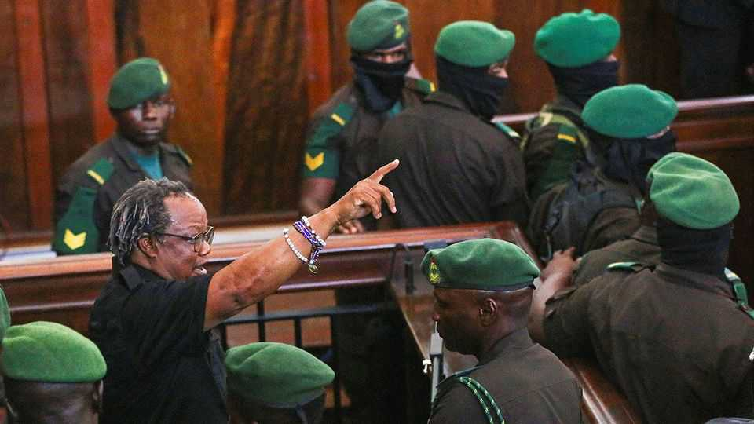

Welcome to Africa’s treason belt
Why African autocrats favour lawfare to stymie opponents

Nov 12th 2026
From the moment Tundu Lissu was seized, after a public meeting in April 2025, it was clear that his would be no ordinary trial. The Tanzanian opposition leader had been cycling through jail cells with almost farcical regularity since his first arrest, on Christmas Eve in 2002. Between 2016 and 2017 he was arrested eight times and charged on six occasions, as well as shot with 16 bullets in 2017. Even so, this time felt different. Mr Lissu knew Samia Suluhu Hassan, Tanzania’s brittle and autocratic president, feared him. In the months following his detention, says a source close to Mr Lissu, police subjected him to psychological tricks meant to force a confession. Cameras tracked his every move, even to the toilet. He was put in a cell with death-row inmates.
So the judges’ verdict, announced to a courtroom surrounded by armed police on November 6th, came as little surprise. The chairman of Chadema, Tanzania’s biggest opposition party, was found guilty of inciting unrest and sentenced to four years in prison. (He is appealing the verdict.) Since Mr Lissu had been on trial for treason, an offence carrying the death penalty, his family and supporters can breathe a sigh of relief. Still, it is a curious outcome for a case where the only physical evidence of wrongdoing prosecutors could muster was a video deemed inadmissible in court.
If Mr Lissu’s case is egregious, it is hardly exceptional in the region. Scores of Chadema members face treason or terrorism charges in Tanzania. Over the border in Uganda, Kizza Besigye is on trial for treason; in Rwanda, Victoire Ingabire is in the dock charged with inciting unrest. Venâncio Mondlane goes on trial in Mozambique on November 17th, accused of instigating terrorism, among other things. Brian Mundubile, in Zambia, has been held on treason charges since an election in August. The clustering of such cases can be read as the stress response of political systems that are beginning to come apart under pressure of public dissatisfaction.
This corner of Africa has evolved its own authoritarian style, distinct from the coups of the Sahel or the wars of the Horn. Most of its countries are, like Tanzania, peaceful. Several have been ruled for decades by the same parties, which see themselves as guarantors of that stability and have become hard to distinguish from the state. Politics borrows a liberal lexicon of rights, elections and constitutionalism. Underneath, it is a dirty game where one player holds almost all the cards.
In several countries this kind of hybrid rule is now being pulled apart from opposite directions. On the one hand, the erosion of democratic norms has reduced the incentive for would-be autocrats to keep up their liberal façades. The latest Mo Ibrahim index, a biennial report on African governance, finds that measures of democracy, including participation in formal politics, have worsened in most of Africa over the past decade. On the other hand, urbanisation and social media are making it harder for ruling parties to engineer consent, as leaders in Kenya, Madagascar, Mozambique and other places that have recently faced Gen-Z protests know well.
Opposition leaders are increasingly disinclined to play along with elections they know they will not be allowed to win. “No reforms, no election” was Mr Lissu’s allegedly incendiary slogan, refusing to participate unless the process was made fair. Mr Mundubile and Mr Mondlane went so far as to declare themselves winners of tainted ballots (without giving evidence to support their claims).
Instead they are seeking alternative tactics, particularly street protests. After four presidential campaigns Mr Besigye in Uganda said he would stop fighting elections and instead pursue “Plan B”. His allies say he meant a non-violent uprising; the state alleges he was organising armed rebellion. Mr Mondlane brought Mozambique to a standstill by co-ordinating demonstrations from his Facebook page. Prosecutors will try to show that his calls for “Turbo V8” protests incited the ensuing violence, which included attacks on government offices and police stations.
The line between violence and non-violence is blurry. Protests turn riotous in response to, or anticipation of, police aggression (and sometimes egged on by agent provocateurs). Opposition leaders are courageous and often principled, but like those in government, they too know how to fight dirty. Some may have been planning to go beyond civil disobedience.
It is hard to know for certain, because courts are not really trying to uncover the truth. Entrenched regimes remember the Arab spring, and see even the mildest protest as potential insurrection. In Uganda, the army chief (and president’s son) has threatened to hang Mr Besigye and had one of his lawyers abducted. Mr Besigye has not been in court to defend himself since collapsing in the dock in July. Prosecutors claim he was caught plotting assassination. But even their main witness, a former soldier in the British Army who was secretly recording his meetings with Mr Besigye for Uganda’s government, testified that he thought the guns supposedly found on the defendant were planted there. “We are all in this pretend game, like there’s a trial going on, but it’s really not,” says Olive Kobusingye, Mr Besigye’s sister.
Since these trials are political processes more than legal ones, they are often surrounded by talk of negotiations or pardons. In Uganda, the president’s brother says he is negotiating for the release of Mr Besigye (whose allies deny talks have begun). In Tanzania, the authorities offered Mr Lissu in private to pardon him if he agreed to leave the country. The final verdict is likely to have turned less on the merits of the case than on the internal politics of Tanzania’s divided ruling party. Since the bloody crackdown that followed last year’s sham election, some within it have urged reconciliation with the opposition. Hardliners around Mrs Samia are said to prefer making a scapegoat of Mr Lissu.
Treason cases in Africa rarely lead to convictions. But since such offences are often non-bailable, they remove pesky politicians from public life for months or even years. “It is a great way of getting rid of opposition leaders,” says Nic Cheeseman of the University of Birmingham. Mr Lissu’s sentence should keep him out of politics for most of the next election cycle.
Because these methods are useful, governments are likely to keep using them. Though diplomatic pressure may have deterred Mrs Samia’s government from forcing the death penalty on Mr Lissu, the world is more tolerant of its repression than it once was. Whether lawfare can save regimes on the ropes is another matter. “They are storing up trouble,” says a Western diplomat in Tanzania. Across the region lurks the spectre of unrest, even of coups. Treason trials are the mark of paranoid regimes, increasingly on edge. ■
Sign up to the Analysing Africa, a weekly newsletter that keeps you in the loop about the world’s youngest—and least understood—continent.